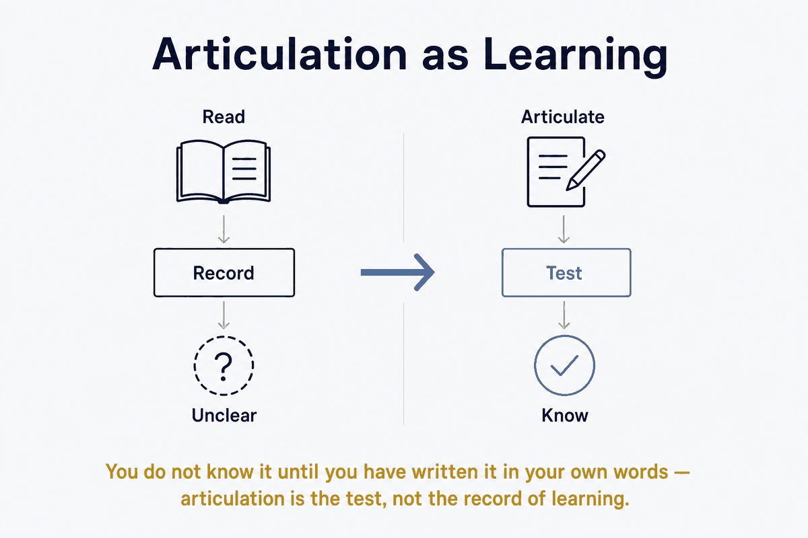

You do not know it until you have written it in your own words — articulation is the test, not the record of learning.

Je leert een onderwerp niet het diepst door het te lézen, maar door het te moeten formuleren — expliciet genoeg om het te sturen, te beoordelen en te corrigeren. Het dwingen tot articulatie verankert dieper dan opnemen. Een artikel laten opstellen en het scherp bijsturen is daarom niet alleen een manier om een tekst te maken, maar een leermethode.
Het onderliggende mechanisme is actief ophalen versus passief herkennen — hetzelfde dat Spaced Repetition (Flashcards) effectief maakt. Een bestaand artikel lezen is herkenning: het voelt als leren maar blijft aan de oppervlakte. Zelf beslissen wat iets ís, welke soorten je onderscheidt, wat de kapstok is en wat eraan hangt — dat is productie, en produceren verankert dieper dan consumeren.
Articuleren dwingt bovendien tot beslissingen die je anders uitstelt. "Is dit systeem of inhoud?" "Is een regisseur een curated source?" "Bedoel ik de publiceer-, data- of stage-variant?" Bij passief lezen kun je die vragen ontwijken; bij het aansturen van een artikel moet je ze beantwoorden. Elke geforceerde beslissing is een stukje kennis dat je vastlegt in plaats van omzeilt.
Een AI die het artikel opstelt, werkt hier als een gate: je moet je gedachte expliciet genoeg maken om erdoorheen te komen. De AI produceert de tekst; jouw sturen, beoordelen en corrigeren is waar het leren zit. Het artikel is het product; het denken dat het afdwingt is de opbrengst.
Het leereffect zit in jouw denkwerk, niet in de gegenereerde tekst. Laat je een artikel genereren en sla je het klakkeloos op, dan verdampt het effect: je hebt een tekst, maar geen kennis. Kritisch duwen, corrigeren en beslissingen forceren is precies wat het laat werken. Het artikel dat je niet kritisch leest, leert je niets.
Dit is de productieve variant van Continuous Learning: niet knowledge bites die naar je terugkomen, maar kennis die je verankert door haar te externaliseren. Het sluit aan op Why Concepts Come First — de kapstok die je bouwt door te articuleren, ís de kennis die je houdt — en op "start with why": je schrijft niet om een tekst te hebben, maar om te begrijpen, en het artikel is het residu van dat begrip.